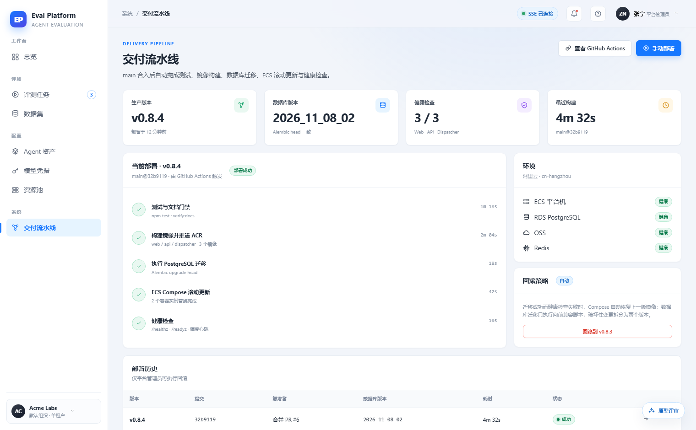
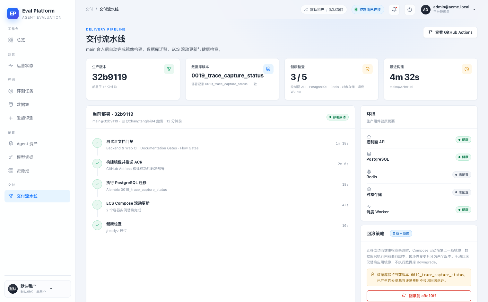
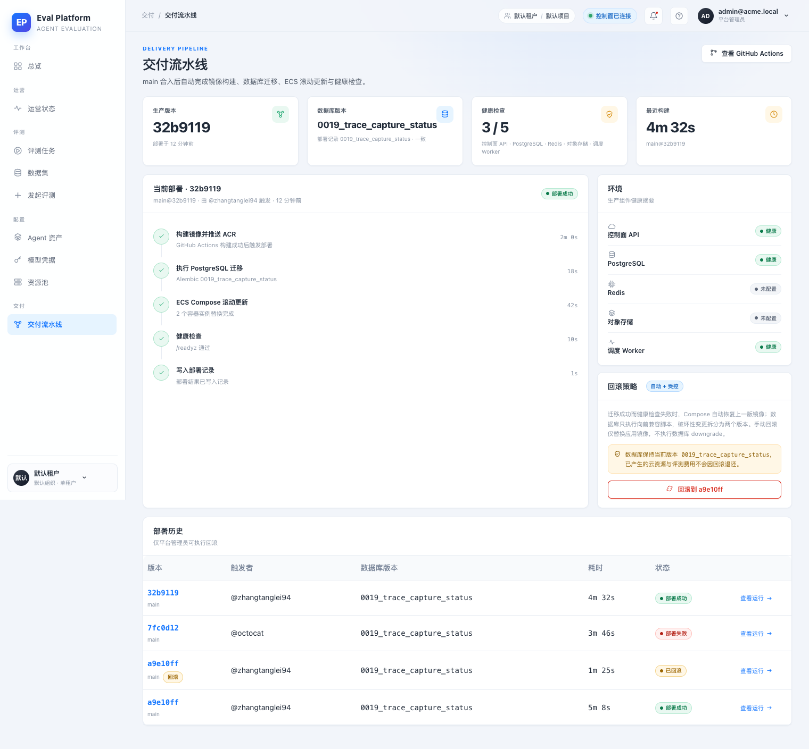
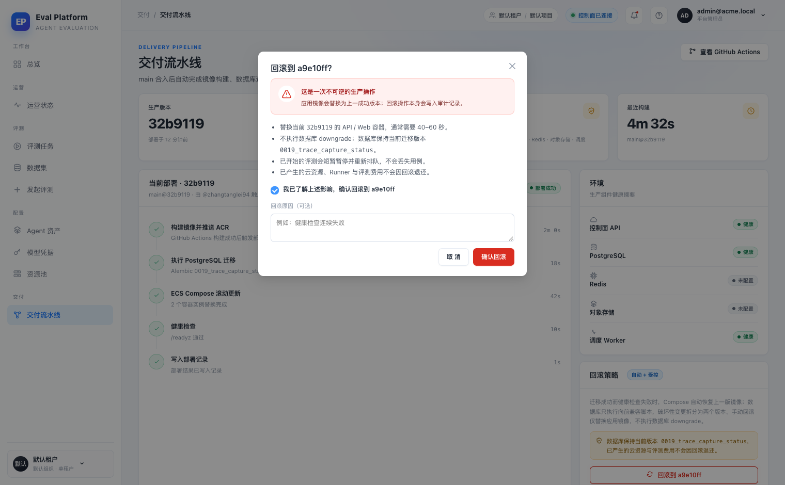
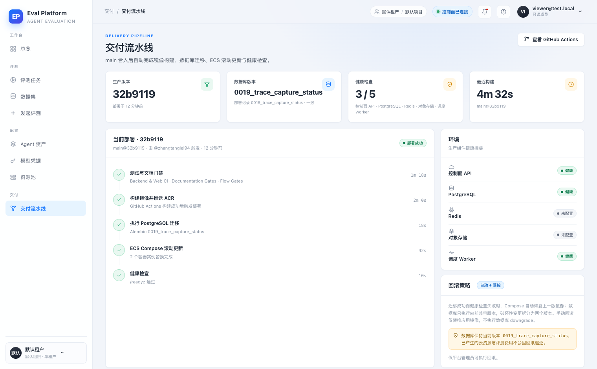
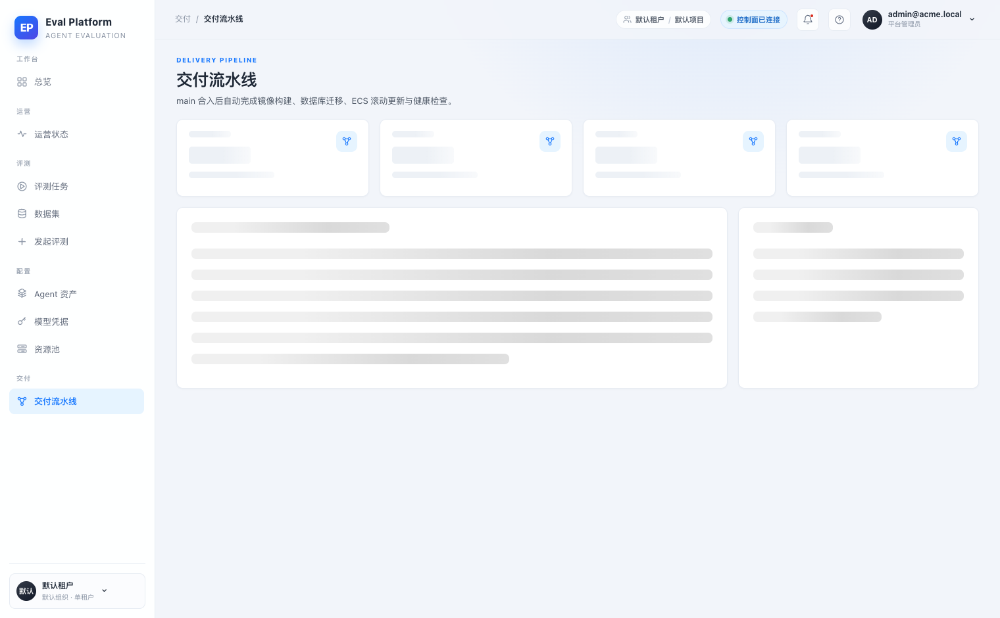
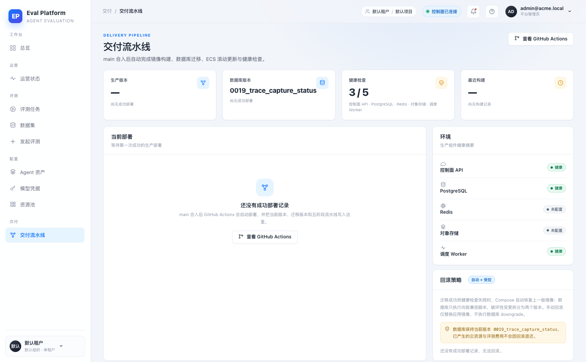

- Commit
- d3d3cb0 (rebased head; UI at 4fda363)
- Frontend
- React + Vite dev server, 127.0.0.1:5188
- Backend
- FastAPI + SQLite, 127.0.0.1:8018
- Baseline
- 线上占位页 main@9bec1dc (UI audit 2026-11-11)
- Data
- 本地 seeded deployment rows; 质量门禁用本地 Actions API stub; 未触发云调用
Web smoke · M5-18
M5-18 交付流水线页面 · 浏览器冒烟报告
在本地真实登录、真实 FastAPI 与 Vite 前端上走通 /deployments：四张摘要卡、与原型一致的五阶段时间线、环境健康、受控回滚二次确认、非管理员权限、加载态与空态均通过。质量门禁阶段从提交的 GitHub Actions 运行读取；本地冒烟用同构 stub 返回三条通过记录，生产查询真实 API。
10 / 10冒烟检查点
0最终缺陷
5流水线阶段
4部署历史行
Environment and Artifact
2026-11-11 · Chrome headless 1520×940 · 本地 SQLite + seeded deployment fixtureScenario Matrix
10 pass| # | 场景 | 结果 | 断言 | 证据 |
|---|---|---|---|---|
| 01 | 管理员登录与页面加载 | PASS | 登录后 /deployments 返回 200，标题、四张摘要卡与当前部署卡渲染。 | after-01-deployments.png |
| 02 | 五阶段时间线（与原型一致） | PASS | 测试与文档门禁 → 构建镜像 → PostgreSQL 迁移 → ECS 滚动更新 → 健康检查；前两段来自 GitHub Actions，后三段来自部署脚本记录。 | after-01-deployments.png |
| 03 | 部署历史与 GitHub Actions 链接 | PASS | 4 条记录，版本、触发者、数据库版本、耗时、状态齐全；查看运行链接到 run URL。 | after-02-full.png |
| 04 | 环境健康摘要 | PASS | API / PostgreSQL / Redis / 对象存储 / Worker 五行；本地未配置 Redis 与对象存储时显示“未配置”，不伪造健康。 | after-01-deployments.png |
| 05 | 受控回滚二次确认 | PASS | 首次点击打开警示弹窗；未勾选确认时按钮禁用，勾选后启用；弹窗说明不可逆范围与已产生费用。 | after-03-rollback-confirm.png |
| 06 | 非管理员不可见回滚 | PASS | viewer 账号可看历史但回滚按钮数量为 0，仅显示“仅平台管理员可执行回滚”。 | after-05-viewer.png |
| 07 | 加载态 | PASS | 延迟 deployments 响应时显示摘要卡骨架与主卡骨架，时间线未提前出现。 | after-04-loading.png |
| 08 | 空态 | PASS | 无部署记录时显示“还没有成功部署记录”、GitHub Actions 入口与“尚无成功部署”口径，回滚按钮不出现。 | after-06-empty.png |
| 09 | 原型对比 | PASS | 四卡、时间线、环境、回滚策略与历史表的层级和视觉与 prototype 部署页一致；差异见下方说明。 | proto-deployment.png after-01-deployments.png |
| 10 | 控制台稳定性 | PASS | 未见运行时异常或 AntD 警告；仅登录前 /auth/me 的预期 401 探测。质量门禁使用本地 Actions stub，生产路径由 API 测试覆盖。 | — |
Issues and Observations
P2 本地冒烟环境缺少 Redis 与对象存储P2 本地冒烟的质量门禁来自 Actions API stub
本地冒烟环境缺少 Redis 与对象存储
- Actual
- 健康检查显示 3 / 5，Redis 与对象存储为“未配置”。
- Expected
- 生产 Compose 同时运行 Redis 与 OSS，两个组件应显示健康。
- Impact
- 仅影响本地截图；接口按真实探针返回，不用 mock 掩盖。
环境限制 · 不影响实现
本地冒烟的质量门禁来自 Actions API stub
- Actual
- 本地启动一个返回 Backend & Web CI / Documentation Gates / Flow Gates 通过的 HTTP stub。
- Expected
- 生产环境由 GET /api/v1/deployments 使用 GITHUB_TOKEN 查询真实 Actions runs。
- Impact
- 截图中门禁状态是同构 stub 数据；真实 GitHub 查询与降级为 unknown 的路径有单元测试覆盖。
证据限制 · 已在 PR 说明
Evidence
8 screenshots







Automated Coverage Assessment
3 areas reviewed| 区域 | 覆盖 | 结论 | 建议 |
|---|---|---|---|
Conclusion
冒烟通过，可交付检视页面主路径、回滚确认、权限、加载与空态通过；剩余风险集中在真实 GitHub Actions 回滚派发与生产 Redis/OSS 探针，需合并后演练。
- 时间线已对齐原型五阶段；质量门禁是真实 Actions 查询，生产 token/网络不可用时降级为 unknown。
- 原型中的“手动部署”未实现：本 issue 只要求回滚与外链，未新增手动部署入口。
- 原型按语义版本展示；真实部署记录只有 commit SHA，因此版本列使用 SHA 并在历史中合并了重复的提交列。
- 测试与文档门禁是独立 CI 工作流，不在 deploy.yml 内；时间线第一段使用真实的镜像构建阶段，避免伪造“测试通过”。
Generated from browser smoke evidence · local fixture data · no secrets captured.